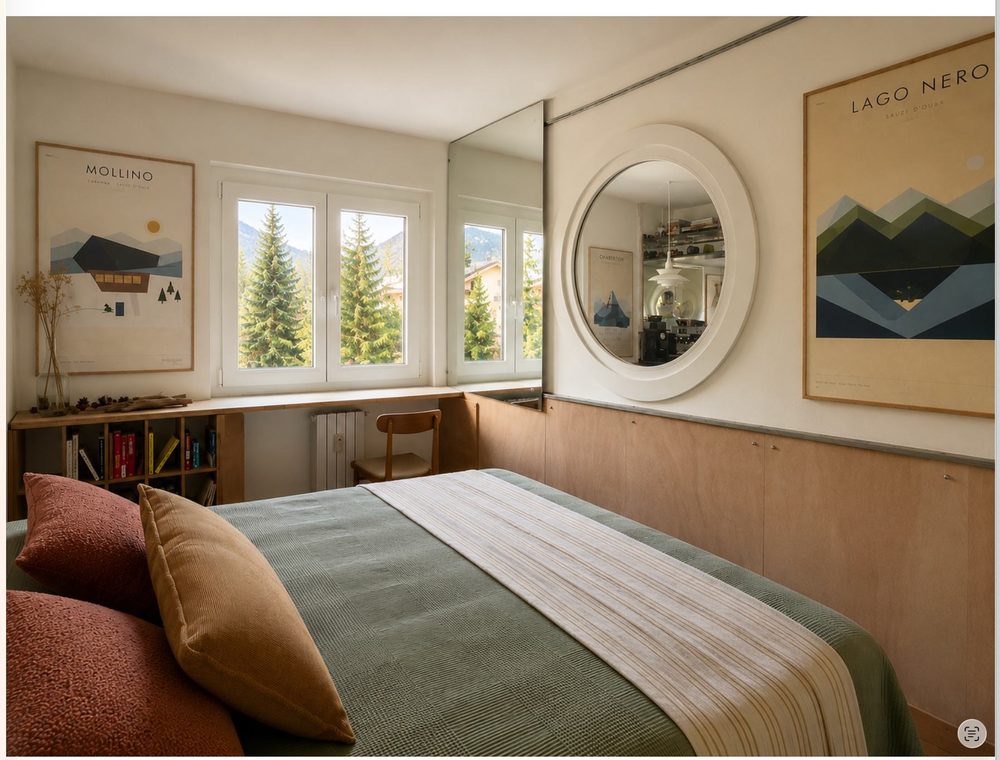
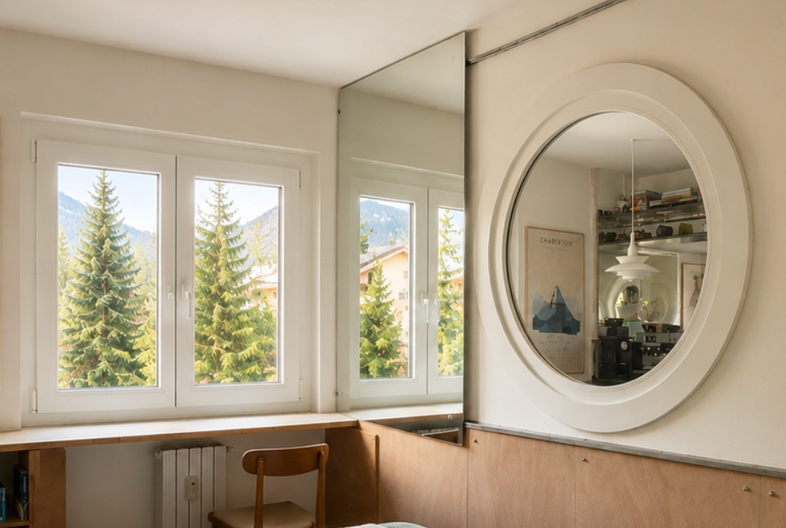

Navette à environ 250 m
L’arrêt de la navette urbaine se rejoint par un court trajet pratiquement plat depuis Grand Villard. Le service est payant; horaires et tarifs varient selon la saison.
Skier à Sauze, traverser les mélèzes vers Sportinia, rentrer avec les chaussures qui sèchent et la montagne toujours cadrée par les fenêtres. Soft Wow Cabin est notre base pour vivre la neige sans renoncer au plaisir de rentrer chez soi.

Une semaine au ski ne se résume pas aux pistes. C’est le rythme du matin, le matériel prêt, le choix du secteur, le retour au chaud et le temps qui reste après la dernière descente. Soft Wow Cabin est organisée autour de ce rythme.
L’arrêt de la navette urbaine se rejoint par un court trajet pratiquement plat depuis Grand Villard. Le service est payant; horaires et tarifs varient selon la saison.
À environ 2,8 km, avec parking gratuit, billetterie et accès au télésiège Jouvenceaux–Sportinia. Notre option préférée pour rejoindre rapidement la montagne.
À environ 1,7 km, au centre de Sauze. Un autre accès pratique au domaine; le stationnement à proximité est payant.
Sauze d’Oulx est l’une des portes de la Vialattea. Rester sur les pistes de Sauze, monter vers Sportinia ou, lorsque les liaisons et les conditions le permettent, poursuivre dans le reste du domaine. C’est tout l’intérêt d’une semaine complète: ne pas être obligé de répéter la même journée.
 Explorer la carte interactive ↗
Explorer la carte interactive ↗Skis, casques et chaussures restent hors de l’appartement, dans la ski & bike room privée et fermée. On y trouve un banc, de l’espace pour le matériel et un sèche-chaussures Alpineheat. Des prises permettent aussi de recharger les vélos électriques.

Après la dernière descente, les chaussures partent sécher et l’on retrouve le bois, la lumière et le calme de la maison. Une douche chaude, quelque chose à cuisiner, un café, le canapé. Pour nous, une semaine au ski, c’est aussi avoir plaisir à rentrer.
Un lit 140×190 cm dans la chambre séparée et un véritable canapé-lit double 140×200 cm dans le séjour. Une configuration adaptée à un couple, deux couples ou une famille. Lit parapluie, chaise haute et livres pour enfants sont aussi disponibles.

Privé, à côté de la maison. Pratique lorsqu’il neige ou pour partir tôt.
Wallbox Ohme PRO Type 2 avec câble; recharge incluse dans le séjour.
Accès autonome avec Nuki + keybox. Arrivée dès 17h00, départ avant 10h00.
Plus calme que le centre, qui reste à environ 15 minutes à pied sur un parcours pratiquement plat.
Cuisine équipée et notre rituel du café pour les matins de ski et les retours tranquilles.
Connexion rapide pour travailler, regarder un film ou préparer la journée suivante.
Soft Wow Cabin accueille jusqu’à quatre personnes à Grand Villard, avec tout ce qu’il faut pour vivre Sauze et la Vialattea plus qu’un simple week-end.
La navette urbaine d’hiver est payante. Les itinéraires, horaires et tarifs sont saisonniers : consultez toujours les informations officielles avant le départ. Infos navette urbaine ↗